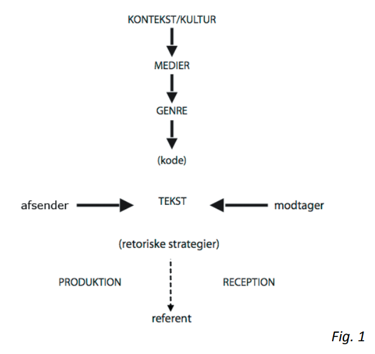

Globalisering betyder kort sagt, når noget sker på globalt plan. Dette kan eksempelvis være hurtig vækst, økonomi eller kommunikation.
I hvor høj grad vi er globaliseret, beskrives i tre forskellige globaliseringsteorier, Hyperglobalister, Skeptikere og transformationalister.
Hyperglobalister mener, at det moderne samfund (fra i midten af 1900-tallet) fundamentalt bryder med tidligere samfundsstrukturer. Her ligger fokus hovedsageligt på et politisk landskab, hvor en nationalstat ikke har en reel magt ifht. Andre politiske organiseringsformer (eksempelvis EU). Hyperglobalister er i høj grad udpræget af den postmodernistiske teori.
Skeptikere mener, at vi har været globalister siden den industrielle tidsalder begyndte. De mener også, at nationalstater aldrig har eller vil miste sin afgørende indflydelse, og at vestens kolonialistiske velmagtsdage stadig gør sig gældende ifht. Det globale, kapitalistiske og økonomiske netværk. Mange hævder også, at mange at verdens markeder er blevet mindre globale, fordi vesten ikke længere er dominerende (Dog ønsker de sig ikke tilbage til den tid hvor vi var). Her hævder de også, at den vestlige region domineres af Europa og USA, og den Østasiatiske region domineres af Kina, i stedet for ét stort globalt marked.
Transformationalisterne ligger i mellem de to øvrige, og har et mere nuanceret synspunkt. Ifølge den britiske sociolog Anthony Giddens, er der tale om et senmoderne samfund, hvor vi stadig er præget af det tidligere moderne samfunds traditioner. "I stedet for at se modernitetens vilkår som et brud, hvor alt kan opsplittes og sammensættes fra grunden(postmodernisme), så ser Giddens senmoderniteten som en radikalisering af modernitet, som har betydning for hele samfund og for den enkeltes valg." (Okei s. 56)

Figur 1 fra http://projekter.aau.dk/projekter/
files/52243725/Reklamedersmitter.pdf
Herunder er der 4 specifikke former for paradigmer med hver deres formål, som er følgende:
Samfundsfaglige paradigme, med fokus på afsenderen og deres position.
Humanistisk paradigme, med fokus på modtageren og deres behov.
Naturvidenskabelige paradigme, med fokus på rå data og målinger.
Relationsparadigme, med fokus på relationer mellem modtager og afsender.
Samfundsfagligt paradigme:
Det samfundsfagligt paradigme anvender videnskabsteoretiske retninger, som antager at verden er forudsigelig og giver mulighed for at planlægge i et stabilt system. Det gør det muligt at danne hypoteser, hvor konkret og målbar data er i fokus, for at kunne bekræfte eller afslå dem. Formålet er at kunne skabe overblik over fremtiden og at kunne forudsige resultater ved ekstern kommunikation.
Humanistisk paradigme:
Det humanistiske paradigme handler om mennesker som en aktiv modtager af et budskab. Her anvendes kvalitative undersøgelser for at gå i dybden med et emne der er relevant for potentielle modtagere. Her spiller ting som kultur (medie eller genre), situation, struktur og tekstur af samtalen en stor rolle, og kan være afgørende for at komme frem til den information man søger. Paradigmet er subjektiv, svær at mål på, og der kan være mere en end komplet sandhed, som bruges til at finde information imellem linjerne.
Naturvidenskabelige paradigme:
Det naturvidenskabelige paradigme beskæftiger sig udelukkende med hård data. Anvender kvantitative metoder, med objektiv synsvinkel for at komme frem til den mest logiske forklaring på et emne. Alt information dannet fra en undersøgelse skal kunne efterlignes, og ny forbedret data udelukke forældet data.
Relationsparadigmet:
Dette paradigme anvendes til at skabe aktiv kontakt mellem brugere, samt kontakt til afsender hvis nødvendig. Det kan være modeller, såsom kommentarer der giver brugere mulighed for at skabe relationer gennem medies sociale rum. Det kan også være i form af en informativ kontakt fra afsenderen, såsom en F.A.Q, hvor brugere kan finde specifik information de søger. Det tænkes også i sammenhæng med hvordan budskabet kan påvirkes af udenforstående elementer, såsom fysiske omgivelser, kulturelle normer eller tidspunkt for modtagelse.
I IMK modellen skelner vi mellem to afsendertyper. Den 'tekst eksterne' og den 'tekst interne', hvor den tekst eksterne afsender udformer teksten, uden at den nødvendigvis har noget med tekstens eventuelle budskab at gøre. Dette kan eksempelvis være et reklamebureau, som er hyret til at producere en reklame.
Den tekst interne afsender skal derimod være tilstedeværende i den sproglige og visuelle del af teksten.
Derudover skelnes der også imellem en primær og sekundær afsender. Den primære afsender står for teksten, og tæller som den virksomhed der reklameres for, hvorimod den sekundære afsender eksisterer inde i teksten, og bringes ind, for på baggrund af deres ekspertise og troværdighed, at gøre budskabet mere attraktivt og ærligt.
Afsender: Den som styrer kommunikationsprocessen / den som står bag kommunikationen.
Modtager: Den som reciperer kommunikationen.
Teksten: Teksten er det budskab, som bliver produceret fra afsenderen, og afkodet af modtageren i en kommunikationssituation
Referent: Referenten der den instant, som refereres til, vha. teksten, dette kan være tilknyttet et sæt af værdier, men også et fysisk produkt.
Kode: Koden styrer produktionen og receptionen af teksten. Koden er et regelsæt for hvordan teksten bliver konstrueret og aflæst. Koden er kulturelt betinger, og den varierer ofte alt efter hvilken kulturel kontekst du finder dig i.
Konteskten/kultur: Kultur og kontekst danner ramme for, produktionen og receptionen af teksten ud fra hvor teksten finder sig. Ændres kulturen, kan dette have en naturlig påvirkning på teksten.
Medier: Medier er dér, hvor teksten formidles ud. Valget af medie spiller en stor rolle, da mediekanalen kan have stor påvirkning på både budskabet og opfattelsen af budskabet.
Genre: En genre er en gruppe af tekster, som har samme kommunikative formål. En tekstgenre er derved et resultat af eksempelvis tekstens sproglige og/eller visuelle form, eller kontekst, kontur eller medie.
Mediesociologi beskrives kort sagt som et felt inden for research, som er en vigtig indfaldsvinkel, når du skal undersøge din målgruppes medievaner og medievirkelighed, på et mere komplekst niveau, end bare at konstatere, at de bruger Twitter, Facebook osv.
Pointen er, at det skal være mere interessant at lave en kommunikationsstrategi, når du ved hvordan din målgruppe bruger medierne, hvordan mediernes indhold påvirker din målgruppe og deres livsstil. Derved kan du med denne information, også foretage de bedst mulige strategiske valg for, hvordan du skal kommunikere ud til din målgruppe.
Sociologi skelner som udgangspunkt mellem to livsfærer:
Mikrosociologi, som handler om os selv, og vores relation til både nære og relativt nære netværk. Dette gælder familier, lærere, kærester, venner osv. Disse har stor betydning for hvordan vi bliver socialiseret, vores adfærd, normer og lign.
Makrosociologi, handler derimod om en oftest upersonlig, lovdreven og organisatorisk "lim", som binder disse relationer som eksempelvis stat, kommunale institutioner og lign. Sammen. Makrosociologi omhandler kort sagt om bureaukrati, som I Danmark eksempelvis står for retssikkerhed, men i andre lande anvendes til at understøtte et diktatur.
Makrosociologi kan også anses, som en formel kontrakt, som knytter dig som borger, og visse organisationer. Derimod anses mikrosociologi som en uformelkontrakt, som du har med dine nære, oftest baseret på følelser og sociale bånd.
Ofte blandes mikro- og makrosociologi også, da du kan have følelser fra mikrosociologi, hvis du har diskussioner om offentlige organisationer eller lign. Med vennerne. Man vil aldrig kunne adskille de to, da de altid vil væve sig ind i hinanden.